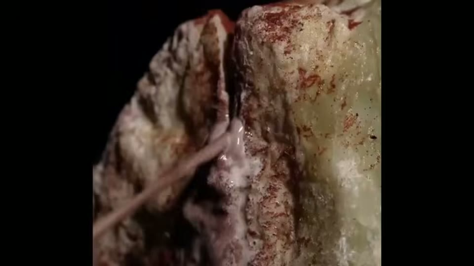

Curious Being
What Were These 5,000-Year-Old Jade Tubes Really For?
Tina · 15 min · watch on YouTube · summarised 2026-08-24
The question is put in the first minute and answered in the last, and the answer is the reason this entry exists.
The objects
They come from the Hongshan culture of north-east China, roughly 5,000–6,500 years ago — thousands of years before the Chinese Bronze Age, before writing, and before any metal tool reached Chinese soil 01:15–01:40.
They are called horse hoof jades, for their silhouette. Each is a hollow oval tube open at both ends: a flat, slightly smaller base with a straight circular mouth, and a larger top cut at a sharp oblique angle — sometimes as steep as 35° — which gives the upper rim its curved hoof-like profile 01:40–02:13.
The dimensions are substantial: 10–18 cm tall, with an oval cross-section 5–10 cm across at its widest. Not beads or pendants.

The object, and the two holes that decide what it was for.
The thinness
The walls average 3–8 mm along the main body. Toward the slanted upper rim — the most structurally vulnerable part of the whole object — the craftsman ground the stone down to 1–2 mm 02:48–03:44.
At that thickness nephrite becomes semi-translucent. Held to a light the stone glows and its internal fibrous texture shows through, like light through frosted glass.
The cutting edge of these items is approximately the thickness of a credit card, made from stone, ground to that dimension 5 to 6,000 years ago, without metal tools of any kind.

The stone, and the condition these objects survive in.
And the material makes it harder still 03:44–04:26. Neolithic Chinese jade is chiefly nephrite — Mohs 6 to 6½, comparable to granite, and tougher again in fracture resistance because of its densely interwoven fibrous structure. Yet grinding a nephrite wall one millimetre too aggressively shatters the piece: months of work destroyed in an instant, with no recovery.
What they were for
Rather than leaving the function open, she works it out — and the reasoning is the best part of the video 04:43–07:00.
Arm guards have been proposed. Three things count against it: the oval width is too restrictive for most arms, the sharp slanted rim would injure the wearer, and there are two small holes drilled at equidistant points along the base that an arm guard cannot account for.
Those two holes are the key. Excavation reports from Niuheliang, one of the most significant Neolithic complexes in China, show a consistent pattern: horse hoof jades appear almost exclusively in the central main tombs — the high-status burials — and within most of those, in one specific position. Directly beneath the skull of the male occupant.

The site the burial evidence comes from.
The reading, supported by burial position across multiple sites, is that these are jade crowns: the oldest jade hair ornaments yet found in China. The hair was gathered upward and passed through the hollow tube from below, then secured by a pin or cord threaded through the two holes at the base, with the slanted rim facing forward or upward.
And that is where the thinness stops being a mystery 07:00–07:57. A solid nephrite tube of those dimensions would weigh 1–1.6 kg — two to three and a half pounds of stone balanced on the head. The walls were hollowed as thin as the material could physically tolerate in order to make the object wearable.
Every fraction of a millimeter removed from those walls was a deliberate engineering decision.
There was an aesthetic dimension too, and she keeps it secondary: in Neolithic ritual culture jade's translucency was read as an expression of the stone's spiritual purity, so a piece thin enough to pass light "was not just lighter, it was holier."
The thread forward
A cultural argument, offered as a suggestion 07:57–09:35. In the Zhou dynasty, around 1100 BC, records document a coming-of-age ceremony called Guanli, in which a young man reaching twenty received his first formal hair crown, a Guan. His father or a designated guest of honour placed it on his head, marking civic responsibility, the duty to serve, and the right to take part in government and ritual. Commoners wore simple wrapped cloth; the guan was reserved for royalty, aristocrats and those holding civic authority.
The Hongshan tubes sit in elite male burials, beneath the skull, two thousand years before the Zhou formalised any of it in writing.
How they were made
The deflation, and it is done properly 09:35–13:05.
The clue is on the interior surfaces of some of the tubes, and on similar marks found on Liangzhu bi discs from a later Neolithic culture: gently curved, shallow, concave markings lining the inside walls. Not random scratches — consistent, patterned traces of a process.
They are cord saw marks.
The craftsman cut the core out not with a rigid tool but with a flexible string — plant fibre, sinew or similar — drawn back and forth across the stone in a continuous sawing motion. And the crucial point:
The cord itself was not a cutting agent. It was a delivery mechanism, charged with a slurry of a hard mineral abrasive — water mixed with quartz sand, garnet, and corundum, all of which rank harder than nephrite on the Mohs scale.
The moving cord carries abrasive particles against the stone on every pass, wearing through material that no plant fibre could scratch on its own.
Unfinished pieces preserve the sequence. The stone was rough-shaped; a small hole was drilled through; a cord was threaded in and the centre core sawn out along a marked guideline.

The method: a soft cord carrying a hard abrasive.

What the process removes, and how the sequence is known.
And the marks themselves are diagnostic. A rigid blade cuts a straight kerf; a flexible cord bows slightly under tension and leaves a subtly curved groove instead.
Those curved marks preserved inside jade objects for 5,000 years are the fingerprints of the craftsman who made them.
Chinese jade workers had a name for the abrasive — jade cutting sand — and it was used across multiple Neolithic cultures. The two basal holes were drilled on the same principle, with hollow bamboo or stone bits rotating against slurry.
Most importantly:
Modern experimental archaeology has confirmed the process entirely. Researchers using string saws, stone drill bits and abrasive slurries have produced tool marks on nephrite that are indistinguishable from those on genuine Neolithic artifacts.
The traditional Chinese account gives four sequential verbs — cutting, grinding, carving, polishing — and the finished surface is the cumulative result of all four, likely over months of continuous labour on a single object.
The verdict
Asked and answered 13:05–14:56:
So, are these out-of-place artifacts evidence of a lost technology or a civilization more advanced than we acknowledge? Honestly, no. And the reason they're not is almost more impressive than if they were.
The Hongshan craftsman understood nephrite's fibrous grain well enough to grind it to a millimetre without shattering it; understood abrasive mechanics well enough to cut hard stone with plant fibre and mineral sand; and understood anatomy and weight distribution well enough to engineer a stone crown that balanced comfortably on a living head.
Not primitive tool users stumbling toward modernity, but sophisticated, observant, endlessly patient masters of the materials their world provided them… The horse hoof jade is not evidence of something we have lost. It's evidence of something we have perhaps forgotten to adequately admire.
She closes by distinguishing this case from others, and promising the next video will cover jade artifacts that do still raise unanswered questions 15:03–15:17.
What you can check yourself
- The objects are excavated, published and in museums. A few dozen are known, chiefly from Niuheliang, and their dimensions and wall thicknesses are recorded.
- The translucency is a property you can see in any photograph taken with light behind the piece.
- The burial position is in the excavation reports — central main tombs, beneath the skull of the male occupant — and that is the whole basis for the crown reading.
- The two basal holes are on the objects and are the detail that rules out the arm-guard proposal.
- The nephrite figures are standard: Mohs 6–6½, with exceptional fracture toughness from the interlocking fibrous structure.
- The weight calculation can be repeated. Nephrite is about 3 g/cm³; a solid tube of those dimensions against a hollowed one is arithmetic anyone can do.
- Cord-saw marks are visible on the artefacts and on Liangzhu bi discs, and the curvature that distinguishes a flexible cord from a rigid blade is the thing to look for.
- The experimental archaeology is published and repeatable — string saw, abrasive slurry, nephrite — and is the part of the argument that does the most work.
- Guanli and the guan are documented in the Zhou ritual texts.
What the video does not settle
- Not one source is named. No excavation report, no experimental study, no museum, no publication, no researcher. For a video whose central claim is that experimental archaeology has confirmed the process entirely, that is the significant gap — the confirmation is the load-bearing fact and it is unattributed.
- "The emerging consensus" is asserted. Who holds it, and whether the crown reading is agreed or merely current, is not said, and no dissenting reading is given beyond the arm-guard proposal she dismisses.
- The burial-position evidence is described rather than shown at all. "Almost exclusively" and "most of those burials" are the operative qualifiers, with no counts, no site table and no proportion — and no burial photograph or plan appears on screen either. The frame under that passage is a general view of the excavated complex. It is the entire basis of the crown reading.
- The translucency is asserted and never shown. The claim that light passes through the wall and reveals the fibrous grain is the video's opening image in words, and no backlit photograph appears in the frames examined.
- The Zhou connection is a resemblance across two thousand years and is offered as one — she says "suggest" and "may have roots" — but no intermediate evidence is presented for the gap between Hongshan and Zhou, and the corpus has seen where that kind of argument leads elsewhere.
- The abrasives are listed without evidence for this case. Quartz sand, garnet and corundum are plausible and are attested in Chinese jade working generally; whether any was identified in residue on these particular objects is not stated.
- "Months of careful, continuous labour" is an estimate with no derivation — no experimental timing, no rate, no source.
- The failure rate is the untold half of the story. If grinding one millimetre too far destroys the piece, the interesting number is how many were ruined for each one that survived. Unfinished and broken examples are mentioned as evidence of method and never counted as evidence of difficulty.
- Whether the translucency was intended is asserted from a general claim about Neolithic ritual culture, not from anything specific to Hongshan.
See also
- China's Impossible Jade Discs — the Liangzhu bi discs whose cord-saw marks she uses here as the comparative evidence.
- Lost Prehistoric Engineering: The Mystery of the 0.5mm Jade Artifact — the video promised in this one's closing seconds, six weeks later, on the jade artefacts she says do still raise unanswered questions. Reading the two together is the point: she separates the explained from the unexplained and says which is which.
- What They are Not Telling You About Precise Egyptian Stone Vases? — the same question about a different material, and the corpus's other case of a precision claim withdrawn.
- A Method to Decipher Ancient Machine Marks from Hand Tools — the tool-mark method, and the entry where a mark's shape is used to identify the tool, as the curved cord kerf is here.
- I Spent Months Investigating the Barabar Caves — the other entry that ends with ropes, sand and patience rather than machinery.
What we have not checked
- Four rows in the Images table are struck. Two because the video does not contain the image, and two marked not examined — the wearing reconstruction and the Zhou crown passages were not opened, under a hard context limit at the end of a long session. That is a budget decision, not a finding, and it is recorded so nobody mistakes it for one.
- No source in this video has been located or read, because none is given. The Niuheliang excavation reports, the experimental archaeology, the consensus on function, the nephrite figures and the Zhou ritual texts are all as she states them.
- The measurements are as given: 10–18 cm tall, 5–10 cm across, walls 3–8 mm and 1–2 mm at the rim, 35° maximum slant, 1–1.6 kg for a solid equivalent.
- The transcript is auto-generated and mangles a few phrases — "Monks will work destroyed" is months of work destroyed; "cut a knife right" is unrecoverable and appears to mean cut the core out; "in thinness" is in thickness. The proper nouns Hongshan, Niuheliang, Liangzhu, Guanli and Guan are as the transcript renders them and have not been checked against Chinese sources.
- "Horse hoof jade" is the English rendering she uses; the Chinese term is not given on screen or in the narration as far as the transcript records.
- Whether the promised follow-up is
M_i8EJIFkWQis inferred from its date and subject, not stated.